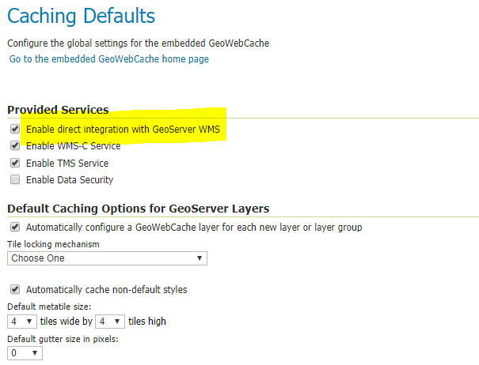

GeoWebCache is used to cache map tiles coming from a variety of sources such as OGC Web Map Service (WMS) i.e. GeoServer in this case. It implements various service interfaces (such as WMS-C, WMTS, TMS, Google Maps KML, Virtual Earth) in order to accelerate and optimize map image delivery. GeoServer comes with GeoWebCache which is called integrated GeoWebCache. However, we need to turn on the layer to use integrated GeoWebCache.
Purpose
To increase the performance of serving layers to the user using GeoServer.
Dependency
- ElasticSearch latest
- ElasticGeo 2.13.2
- GeoServer 2.13.2
Performance Calculation Using LeafLet
We need to do following. The angular script can be run through Zeppelin or using html page. It's upto you. However, I tested using Zeppelin
- Create a layer in GeoServer using this article. Datasource must have lots of data to see the performance. At least 1 million records.
- Enable the direct integration with GeoServer WMS check box from caching 
- Add following angular script to Zeppelin or in your html to see a layer in your leaflet map without using GeoWebCache
%angular - Add following angular script to Zeppelin or in your html to see a layer in your leaflet map using GeoWebCache. Need to
add
tiled=trueas a query parameter in the WMS requests. You can see the different in load time of the data on the map.%angular
Performance Calculation Using Python Script
Let's run the following pythong script to see the number
%python
import requests
import time
import grequests
from urllib.request import urlopen
url = "http://localhost:8080/geoserver/elasticsearch/wms"
layer = "elasticsearch:07177d4c-1227-4be4-aecc-56b600e3ed24"
bbox = [
"-2504688.5428486555,2504688.5428486546,0,5009377.085697309",
"0,2504688.5428486546,2504688.5428486555,5009377.085697309",
"-2504688.5428486555,5009377.085697309,0,7514065.628545966",
"0,5009377.085697309,2504688.5428486555,7514065.628545966",
"-2504688.5428486555,-7.081154551613622,0,2504688.5428486546",
"0,-7.081154551613622,2504688.5428486555,2504688.5428486546",
"-5009377.085697311,2504688.5428486546,-2504688.5428486555,5009377.085697309",
"2504688.5428486555,2504688.5428486546,5009377.085697311,5009377.085697309",
"-5009377.085697311,5009377.085697309,-2504688.5428486555,7514065.628545966",
"2504688.5428486555,5009377.085697309,5009377.085697311,7514065.628545966",
"-5009377.085697311,-7.081154551613622,-2504688.5428486555,2504688.5428486546",
"2504688.5428486555,-7.081154551613622,5009377.085697311,2504688.5428486546",
"-2504688.5428486555,7514065.628545966,0,10018754.171394618",
"0,7514065.628545966,2504688.5428486555,10018754.171394618",
"-2504688.5428486555,-2504688.542848655,0,-7.081154551613622",
"0,-2504688.542848655,2504688.5428486555,-7.081154551613622",
"-5009377.085697311,7514065.628545966,-2504688.5428486555,10018754.171394618",
"-7514065.628545966,2504688.5428486546,-5009377.085697311,5009377.085697309",
"5009377.085697311,2504688.5428486546,7514065.628545966,5009377.085697309",
"-5009377.085697311,-2504688.542848655,-2504688.5428486555,-7.081154551613622",
"2504688.5428486555,-2504688.542848655,5009377.085697311,-7.081154551613622",
"-7514065.628545966,5009377.085697309,-5009377.085697311,7514065.628545966",
"5009377.085697311,5009377.085697309,7514065.628545966,7514065.628545966",
"-7514065.628545966,-7.081154551613622,-5009377.085697311,2504688.5428486546",
"5009377.085697311,-7.081154551613622,7514065.628545966,2504688.5428486546",
"-7514065.628545966,7514065.628545966,-5009377.085697311,10018754.171394618",
"5009377.085697311,7514065.628545966,7514065.628545966,10018754.171394618",
"-7514065.628545966,-2504688.542848655,-5009377.085697311,-7.081154551613622",
"5009377.085697311,-2504688.542848655,7514065.628545966,-7.081154551613622",
"-10018754.171394622,2504688.5428486546,-7514065.628545966,5009377.085697309",
"7514065.628545966,2504688.5428486546,10018754.171394622,5009377.085697309",
"-10018754.171394622,5009377.085697309,-7514065.628545966,7514065.628545966",
"7514065.628545966,5009377.085697309,10018754.171394622,7514065.628545966",
"-10018754.171394622,-7.081154551613622,-7514065.628545966,2504688.5428486546",
"7514065.628545966,-7.081154551613622,10018754.171394622,2504688.5428486546",
"-10018754.171394622,7514065.628545966,-7514065.628545966,10018754.171394618",
"7514065.628545966,7514065.628545966,10018754.171394622,10018754.171394618",
"-10018754.171394622,-2504688.542848655,-7514065.628545966,-7.081154551613622",
"7514065.628545966,-2504688.542848655,10018754.171394622,-7.081154551613622"
]
number_users=10
headers = {
'name':'test'
}
wholeStart = time.time()
queryParams = []
goodCalls = 0
badCalls = 0
for i in range(number_users):
start = time.time()
for box in bbox:
querystring = {"LAYERS":layer,"FORMAT":"image/png","REQUEST":"GetMap","STYLES":"","SRS":"EPSG:3857","BBOX":box,"WIDTH":"256","HEIGHT":"256", "TRANSPARENT":"true"}
queryParams.append(querystring)
r = requests.request("GET", url, headers=headers, params=querystring)
#print(r.url)
#print(r)
info = r.headers['Content-Type']
if info=='image/png':
goodCalls += 1
else:
badCalls += 1
query_time = time.time() - start
print('Query time for user ' + str(i) + ' is {}'.format(query_time))
#rs = (grequests.get(url, headers=headers, params=p) for p in queryParams)
#print(grequests.map(rs))
wholeQueryTime = time.time() - wholeStart
print('Query time for total users ' + str(number_users) + ' with request total ' + str(len(queryParams)) + ' is {}'.format(wholeQueryTime))
print('Total good calls ' + str(goodCalls) + ' with total bad calls ' + str(badCalls))
The Runtime without using GeoWebCache is as follows
Query time for user 0 is 21.038068056106567
Query time for user 1 is 19.959446907043457
Query time for user 2 is 19.74454951286316
Query time for user 3 is 19.76458168029785
Query time for user 4 is 20.557850122451782
Query time for user 5 is 21.417890310287476
Query time for user 6 is 20.058231353759766
Query time for user 7 is 19.57079005241394
Query time for user 8 is 19.79716420173645
Query time for user 9 is 19.767117023468018
Query time for total users 10 with request total 390 is 201.68155598640442
Total good calls 390 with total bad calls 0
The Runtime with using GeoWebCache is as follows
Change the url to
url = "http://localhost:8080/geoserver/elasticsearch/wms?tiled=true&"
Query time for user 0 is 0.638730525970459
Query time for user 1 is 0.5899291038513184
Query time for user 2 is 0.5873465538024902
Query time for user 3 is 0.8277342319488525
Query time for user 4 is 0.6482501029968262
Query time for user 5 is 0.6671054363250732
Query time for user 6 is 0.6258928775787354
Query time for user 7 is 0.6370384693145752
Query time for user 8 is 0.5637142658233643
Query time for user 9 is 0.5665357112884521
Query time for total users 10 with request total 390 is 6.361682415008545
Total good calls 390 with total bad calls 0
Conclusion
GeoWebCache increases the performance of GeoServer substancially as you can see above. This will be very useful if multiple users try to access same layer. We just need to remember turn on the integrated GeoWebCache option while creating a layer.
References
Copyright of geoserver image is © wikipedia.org
{kind=link}
http://geoserver.org
https://github.com/ngageoint/elasticgeo
http://geowebcache.org/